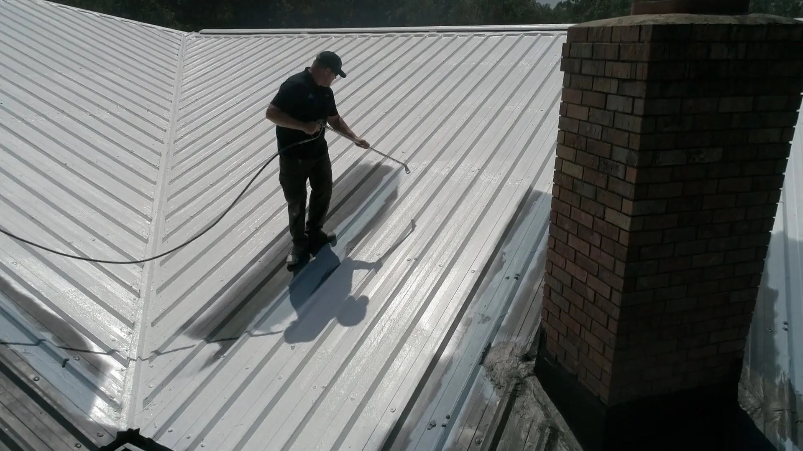
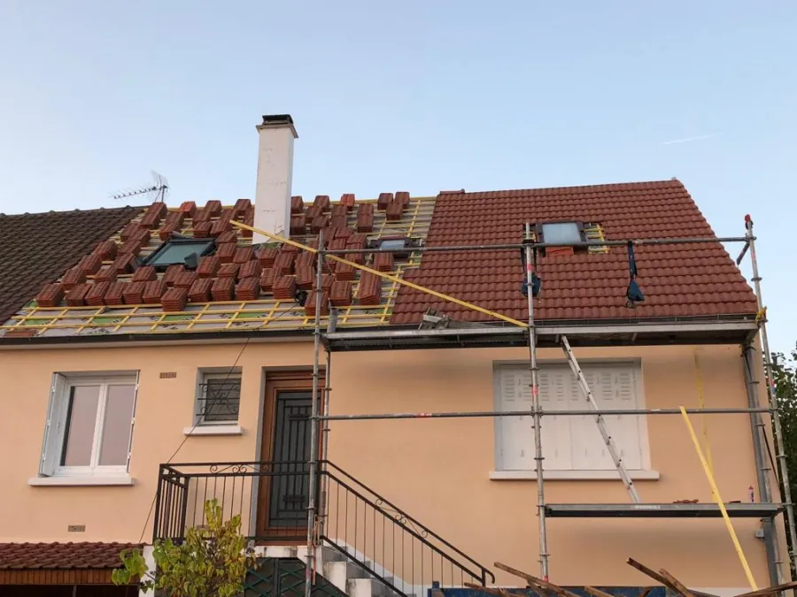
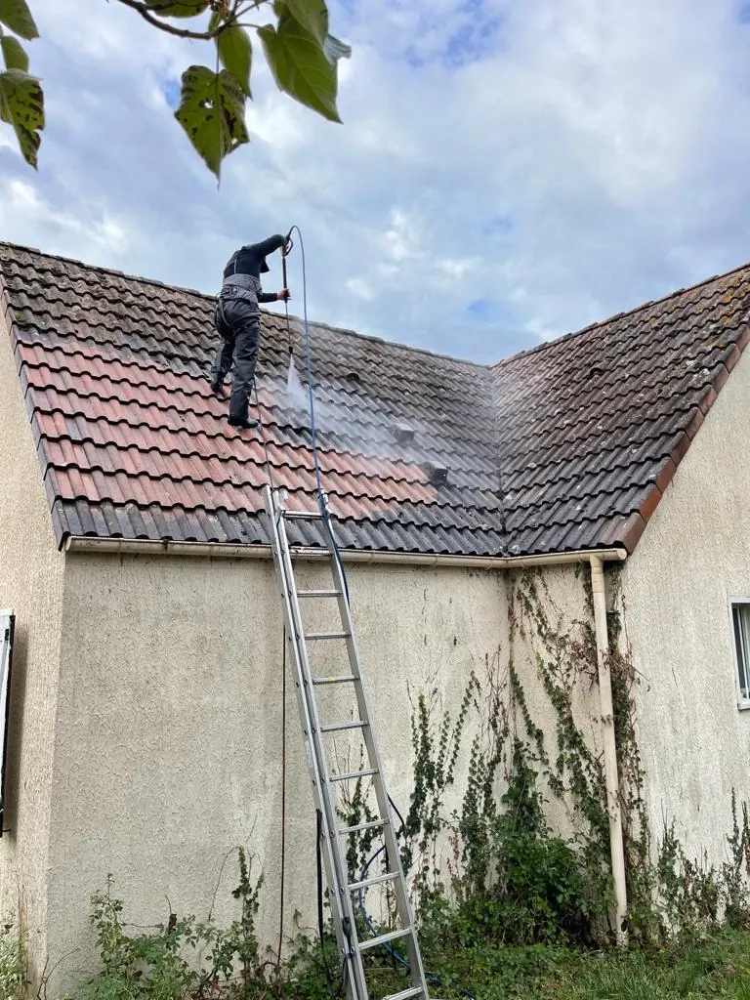
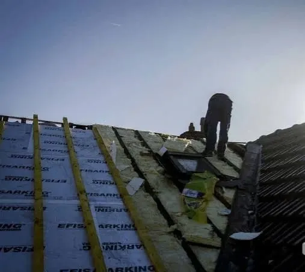
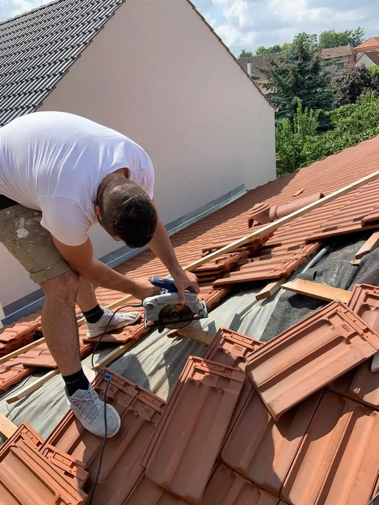
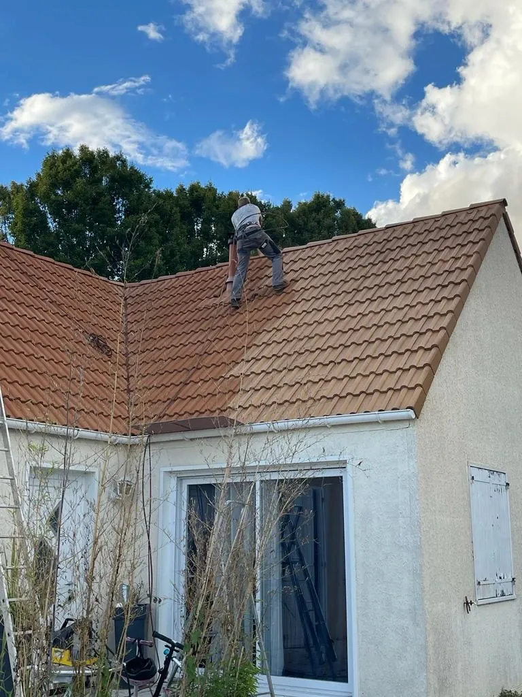
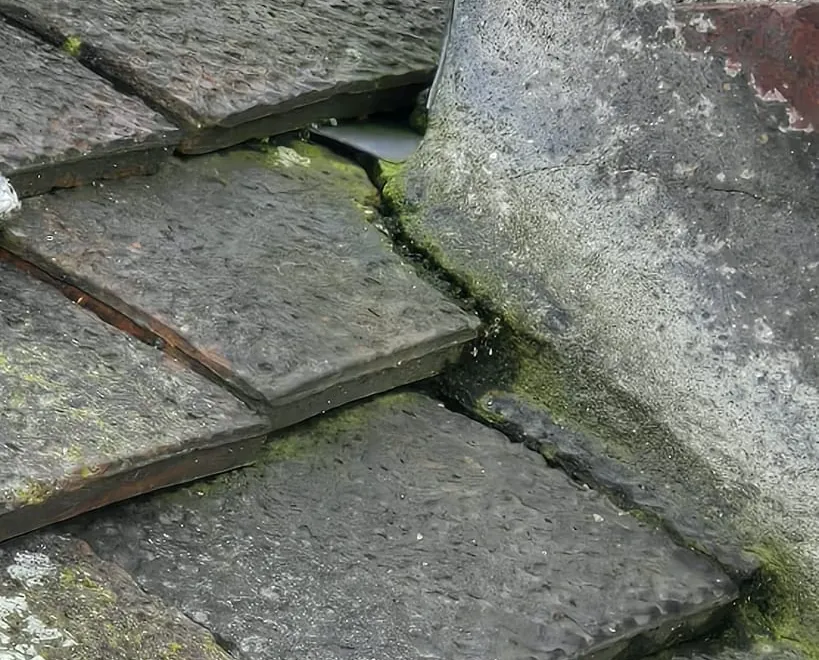
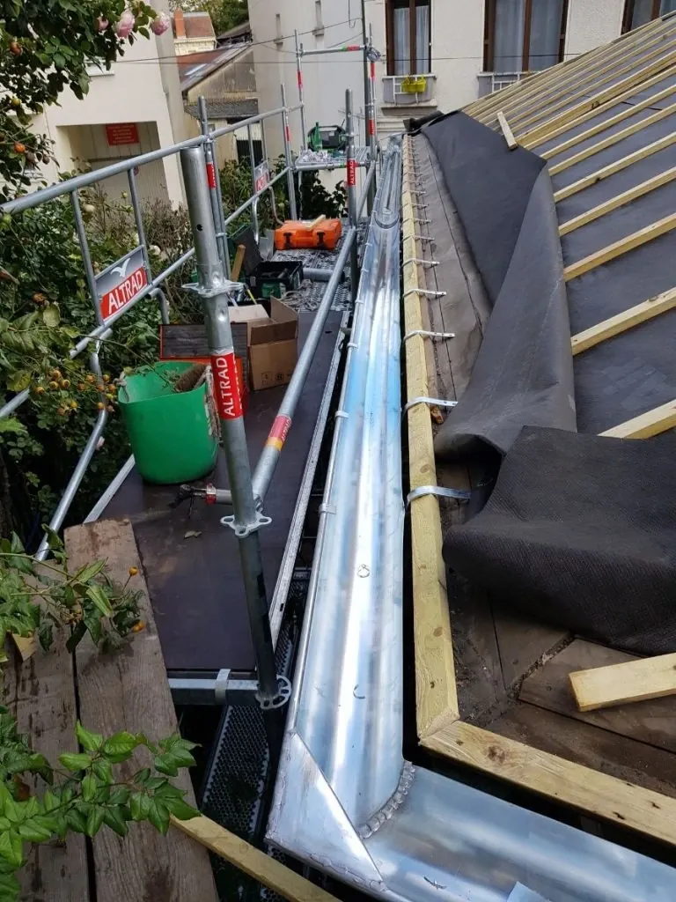
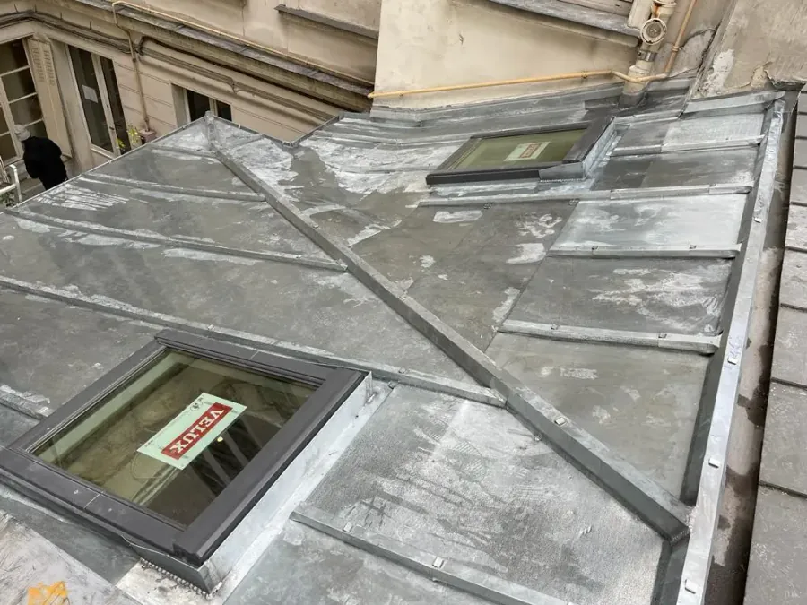
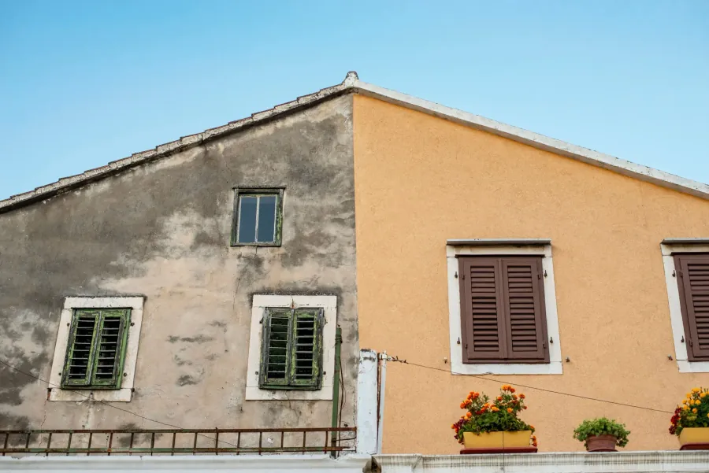

Couvreur Carcassonne
Nettoyage toiture
Reparation toiture
Carcassonne
Réparation Toiture, Rénovation Toiture, Urgence Réparation Fuite, Nettoyage Toiture, Traitement de Toiture à Carcassonne. Réponse en 24h max et prise en charge rapide de votre chantier.


Carcassonne : pourquoi choisir Couvreur 11 pour votre toit ?
De la Bastide Saint-Louis aux quartiers résidentiels, trouver un couvreur qualifié à Carcassonne prend du temps. Avec des tarifications opaques et des travaux parfois sans garantie, le bon choix n'a rien d'évident.
Avec Couvreur 11, vous avez face à vous un partenaire solide, engagé sur des garanties concrètes :
- ✓ Couverture décennale sur chacun de nos chantiers
- ✓ Lundi au Samedi: 08h - 19h
- ✓ Réponse en 24h max
- ✓ Artisans formés aux savoir-faire anciens comme aux procédés actuels
- ✓ Estimation offerte, sans contrepartie
À Carcassonne, nos artisans assurent tous vos projets : réparation toiture, rénovation toiture, urgence réparation fuite, nettoyage toiture, traitement de toiture, isolation toiture.
Un couvreur qualifié se juge à ses engagements. Découvrez les nôtres :
Garantie décennale
Sur chacun de nos chantiers
Réponse Express
24h max
Rayon 50km
Dans tout le département 11
Larges Horaires
Lundi au Samedi: 08h - 19h
Artisans Qualifiés
Savoir-faire ancien & procédés actuels
Devis Gratuit
Sans contrepartie
À Carcassonne, nos artisans assurent tous vos projets : réparation toiture, rénovation toiture, urgence réparation fuite, nettoyage toiture, traitement de toiture, isolation toiture.
Nos Métiers de la Couverture à Carcassonne
Expert couvreur Carcassonne (11) - Devis offert pour vos travaux de toiture

Réparation Toiture
Une tuile canal glissée par le vent, et l'infiltration n'est jamais loin à Carcassonne. Nous trouvons l'origine du problème, remplaçons les pièces abîmées et rétablissons l'étanchéité sous 24h, garantie décennale à l'appui.
EN SAVOIR PLUS
Nettoyage Toiture
Votre toit de Carcassonne se couvre de mousses côté nord ? Nous le démoussons et le rinçons sous 48h, puis appliquons un traitement préventif, pour une couverture propre et garantie 5 ans.
EN SAVOIR PLUS
Isolation Toiture
Combles perdus ou aménagés à Carcassonne : isolés en moins de 7 jours, ils gardent la fraîcheur l'été et la chaleur l'hiver. Vos factures baissent, et les travaux sont garantis jusqu'à 10 ans.
EN SAVOIR PLUS
Étanchéité Toiture
Votre terrasse ou votre toit plat prend l'eau à Carcassonne ? Membranes fiables et relevés soignés mettent fin aux infiltrations, avec une garantie de 10 ans.
EN SAVOIR PLUS
Rénovation Toiture
Votre maison de Carcassonne mérite une toiture neuve ? Dépose, charpente contrôlée, écran sous-toiture et tuiles neuves : nous refaisons tout pour un toit sain et isolant, garanti 10 ans.
EN SAVOIR PLUS
Peinture Toiture
Rendez leur teinte à vos tuiles à Carcassonne avec une peinture de toiture hydrofuge : couleur ravivée, protection contre les UV et la pluie, et 10 ans de garantie sur les finitions.
EN SAVOIR PLUS
Urgence Réparation Fuite
Orage ou fuite subite à Carcassonne : notre équipe d'urgence arrive en moins d'une heure pour bâcher, sécuriser puis réparer votre toiture, avant que l'eau ne gagne les pièces. Réparation garantie 10 ans.
EN SAVOIR PLUS
Gouttières Zinguerie
À Carcassonne, les gouttières doivent absorber de fortes averses. Nous posons et remplaçons vos gouttières en zinc ou PVC sous 48h, avec une pente juste et une garantie de 10 ans.
EN SAVOIR PLUS
Traitement de Toiture
À Carcassonne, le soleil et les pluies méditerranéennes usent les tuiles. Notre anti-mousse curatif suivi d'un hydrofuge, posé sous 48h et garanti 10 ans, garde votre toit imperméable.
EN SAVOIR PLUS
Pose de Fenêtre de Toit
Plus de clarté sous les toits de Carcassonne : vos fenêtres de toit Velux sont posées en 48h, bien intégrées et parfaitement étanches, avec une garantie de 10 ans.
EN SAVOIR PLUS
Charpente
Votre charpente de Carcassonne doit être renforcée, traitée ou refaite ? Bois traditionnel ou fermette, nos charpentiers interviennent sous 48h pour une structure saine, garantie 10 ans.
EN SAVOIR PLUS
Ravalement de Façade
Façade grise ou fissurée à Carcassonne ? Nous nettoyons, réparons et ravalons vos murs avec un enduit adapté, en moins de 15 jours, avec une garantie pouvant atteindre 10 ans.
EN SAVOIR PLUSLes Tarifs de Nos Couvreurs à Carcassonne
Un prix expliqué, fixé avant le premier coup de marteau
Un déplacement gratuit
Nous nous déplaçons à Carcassonne pour inspecter la couverture, mesurer les surfaces réelles et photographier les désordres. Vous obtenez un état des lieux clair, que le chantier nous soit confié ou non.
Un devis ligne par ligne
Fournitures, pose, échafaudage, protection des accès et évacuation apparaissent séparément. En copropriété comme en maison individuelle à Carcassonne, chacun décide en connaissance de cause.
Un prix qui ne bouge pas
Le montant accepté ne change pas. Si la dépose révèle un support abîmé, nous vous alertons, nous chiffrons à part et nous attendons votre accord écrit avant d'agir.
Depuis Lézignan-Corbières, Carcassonne se rejoint rapidement par l'autoroute. Nos équipes s'y rendent pour une réparation de toiture, une rénovation complète, un nettoyage de couverture ou une reprise de zinguerie. Présentez-nous votre projet à Carcassonne : chiffrage sous 24h maximum. Une question sur les prix ? Le 06 21 81 16 63 répond du lundi au samedi, de 08h à 19h.
 Offre en cours
Offre en cours
Démoussage à Carcassonne : l'hydrofuge est offert
Une mousse sur le toit n'est pas qu'un souci d'apparence. Elle maintient l'humidité contre la tuile, gêne le séchage et abîme le matériau lors des gelées d'hiver. Pour tout démoussage validé à Carcassonne, nous posons le traitement hydrofuge sans supplément.
- Réalisé par un couvreur de notre équipe
- Produit pro 2 en 1 : il nettoie le toit, puis le protège
- Hydrofuge inclus, sans ligne supplémentaire
- Devis offert, retour sous 24h
NOS POINTS FORTS
Un artisan couvreur près de chez vous à Carcassonne
📍 Présents localement, réactifs :
Grandes communes voisines :

Une garantie de dix ans sur nos chantiers
Les toitures que nous livrons à Carcassonne sont toutes couvertes par notre assurance décennale. Durant dix ans après la réception, un désordre touchant l'étanchéité ou la solidité de l'ouvrage donne lieu à une reprise à nos frais. Cette obligation légale n'a de sens qu'avec une entreprise solide : la nôtre s'appuie sur plus de vingt ans de métier.
- Attestation d'assurance fournie avant la signature du devis
- Garantie sur la réparation, la rénovation, la charpente, l'étanchéité et la zinguerie
- Matériaux aux normes DTU, garantis par le fabricant
- Un seul contact du premier appel à la réception
Nos 46 avis 5,0/5 viennent en bonne partie de clients recroisés plusieurs fois au fil des années.
Entretien de Votre Toiture à Carcassonne
Une visite ponctuelle ou un suivi annuel, selon vos besoins
Une intervention unique, sans abonnement
Le bon réflexe après un épisode de vent, avant de vendre un bien à Carcassonne, ou pour reprendre en main une toiture négligée depuis plusieurs années.
- Diagnostic de toute la couverture
- Devis détaillé, sans obligation d'accepter
- Reprise des tuiles, solins, faîtage et rives
- Gravats évacués, abords propres
Un suivi chaque année
Chaque année, nous revenons à Carcassonne contrôler votre couverture. Cette visite évite les gros chantiers au profit d'interventions courtes et peu coûteuses.
- Contrôle des fixations, solins et faîtage
- Nettoyage des gouttières et contrôle des descentes d'eau
- Rapport photo à chaque passage
- Prioritaire si une urgence survient


Votre Couvreur à Carcassonne
Basés à Lézignan-Corbières et forts de plus de 20 ans de métier, nous intervenons aussi à Carcassonne. Cette ville offre un bâti très varié : maisons anciennes de la Bastide Saint-Louis, faubourgs, lotissements récents et petits collectifs. Autour de la Cité et de ses abords protégés, matériaux et teintes sont encadrés. À Carcassonne, les toitures mitoyennes exigent aussi de la méthode : une reprise mal menée chez l'un se répercute chez le voisin.
Nos couvreurs prennent en charge la réparation de toiture et la rénovation complète, la recherche de fuite et sa réparation, le changement de tuiles et d'ardoises, la pose de gouttières en zinc, l'isolation des combles, la pose de fenêtres de toit, la charpente et le ravalement de façade. À Carcassonne, vous n'avez qu'un seul contact, du relevé à la réception.
Vous nous joignez du lundi au samedi, de 08h à 19h : réponse sous 24h maximum et, à Carcassonne, équipe sur place en moins d'une heure si une fuite se déclare. Hors urgence, nous recommandons un entretien régulier, qui évite la majorité des sinistres que nous réparons.
Questions souvent posées
Nos réponses sur la couverture à Carcassonne
Êtes-vous réactifs à Carcassonne ?
Oui. Depuis Lézignan-Corbières, nos couvreurs rejoignent Carcassonne rapidement. Les urgences sont traitées sous 24h et les autres chantiers planifiés dans les meilleurs délais.
Le devis pour une toiture à Carcassonne est-il offert ?
Oui. Nous venons évaluer votre toiture à Carcassonne sans frais, puis nous vous remettons un devis détaillé et sans engagement, avant tout début de travaux.
Sur quelles toitures travaillez-vous à Carcassonne ?
Maisons de ville, pavillons ou petits immeubles de Carcassonne : tuiles canal, mécaniques ou plates, ardoises, zinc et toits-terrasses. Chaque matériau a sa technique adaptée.
Vous déplacez-vous autour de Carcassonne ?
Oui, en plus de Carcassonne, nous nous rendons à Trèbes, à Lézignan-Corbières, dans les communes voisines et sur tout le reste de l'Aude (11).
Vos chantiers à Carcassonne bénéficient-ils d'une garantie ?
Tous nos travaux à Carcassonne sont couverts par la garantie décennale et réalisés par une entreprise certifiée RGE, avec des matériaux de qualité qui durent.